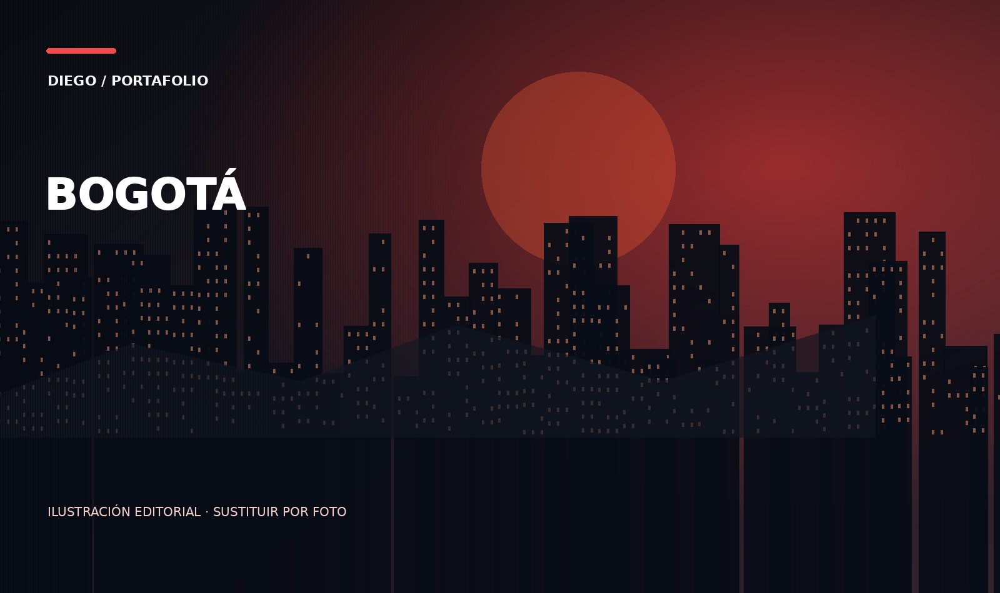

BOGOTÁ, COLOMBIA / PORTAFOLIO PERSONAL
Diego Fernando
Baron Fajardo.
Estudiante de Ingeniería de Sistemas, piloto comercial y emprendedor. Me mueve la curiosidad por crear, descubrir el mundo y construir proyectos con propósito.
INGENIERÍA DE SISTEMASAVIACIÓNVIAJES Y DEPORTEBADICELL

01 / LA PERSONA DETRÁS DE LOS PROYECTOS
Hay mucho más que contar fuera del aula.
Viví ocho meses en Australia para estudiar inglés cuando tenía 15 años. Me apasionan los viajes, el fútbol y la Fórmula 1. Mi historia también pasa por la aviación y por el deseo de construir mi propia empresa.
Este espacio reúne mis experiencias, lo que he aprendido y los lugares que quiero conocer.
Historia, viajes y pasiones ↗02 / LO QUE CONSTRUYO
De la idea a la realidad.
Mi formación académica tiene su propio espacio: aquí muestro una selección de los proyectos que más me han enseñado.
03 / MI SIGUIENTE CAPÍTULO
Tecnología en el presente, mundo por descubrir.
Quiero seguir creciendo en tecnología mientras construyo un camino propio, de esos que se levantan con disciplina, ideas y mucha ilusión. También me emociona pensar en los lugares que aún no conozco: perderme entre ciudades de Europa y Asia, aprender de nuevas culturas y, algún día, llegar al Santiago Bernabéu para vivir de cerca ese sueño que acompaña a todo hincha del Real Madrid.